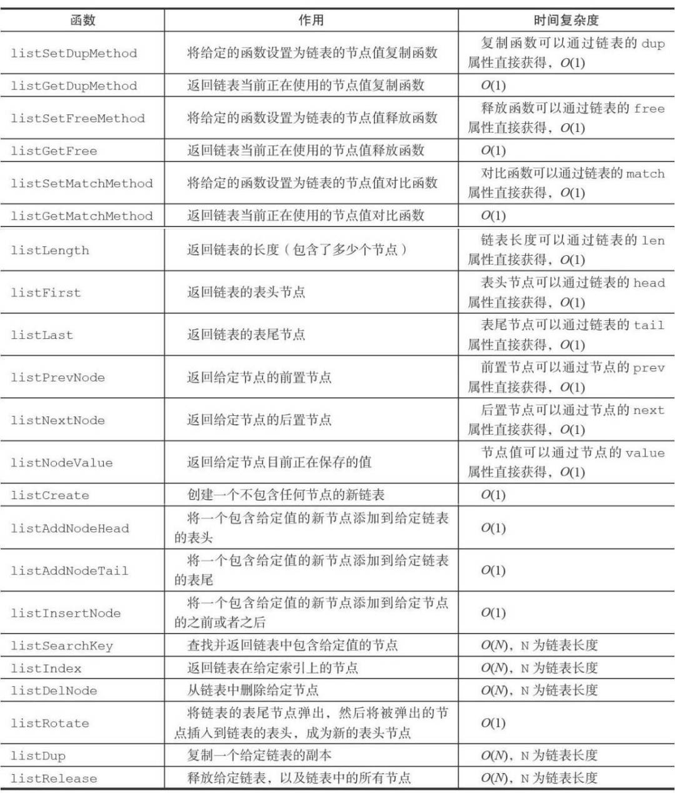

Redis底层数据结构-链表
链表
链表在Redis中的应用非常广泛，列表键的底层实现之一就是链表。在Redis中的发布订阅、慢查询、监视器等功能也都用到了链表。
链表和链表节点的实现
1 | |
通过prev和next组成双端链表，并且使用list结构来操作链表。list结构如下：
1 | |
Redis的链表实现的特性可以总结如下：
双端、无环、带表头指针和表尾指针、带链表长度计数器、多态（通过dup、free、match三个属性节点值设置类型特定函数，所以链表可以保存各种不同类型的值）
总结
常规链表操作，附上常用API

本博客所有文章除特别声明外，均采用 CC BY-SA 4.0 协议 ，转载请注明出处！